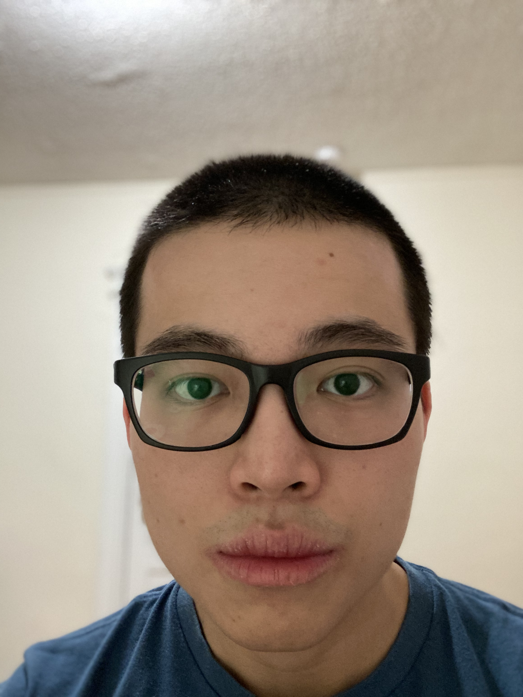

|
 |
Hello there! Welcome to my profile! I'm currently a rising junior at Boston University majoring in Physics and Computer Science. In Computer Science, my research interests include Algorithms, Computation Theory, and Quantum Computing. In Physics, my focus is in Condensed Matter Physics, Quantum Theory, and Statistical Mechanics. You can find some of my lecture notes and notes on topics that I have studied (or self-studied) about down below. Before studying at Boston University, I was a student at the British Vietnamese International School in Ho Chi Minh city, Vietnam. I'm the President of Boston University Chess Club. You may join our BUChess Discord or our group on chess.com. My hobbies include playing/learning chess, reading literature, practice karate, and creating new things. |